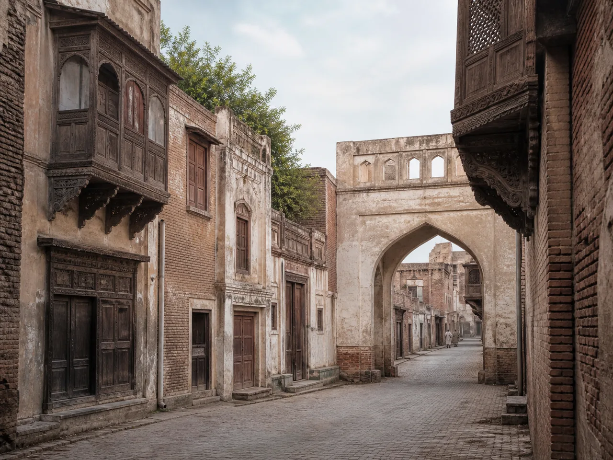

DEMO
Architecture & Built Heritage
DEMO — Notes from a painted courtyard
A development-only example showing how a researched place story can unfold through images, quotations and references.
12 Sept 2026
Read storyArchive collection
Discover architectural histories, urban fabric and the many ways Pakistan’s built heritage has been made, inhabited and adapted.
1–12 of 103 stories
Explore researched places, objects and cultural memoryArchitecture & Built Heritage
A development-only example showing how a researched place story can unfold through images, quotations and references.
12 Sept 2026
Read story
Architecture & Built Heritage
A built-heritage example for pagination, search and featured-story testing.
12 Nov 2026
Read storyArchitecture & Built Heritage · Mohenjo-daro · Sindh
Mohenjo Daro’s lanes reveal a city that was planned, used and altered. Thresholds and blocked drains tell a more intricate story than the familiar grid diagram.
Read storyArchitecture & Built Heritage · Mohenjo-daro · Sindh
Mohenjo Daro’s architecture is best read through materials, levels and connections—not through confident labels for buildings whose original names are unknown.
Read storyArchitecture & Built Heritage · Lahore · Punjab
Lahore’s Anarkali tomb holds more than a celebrated romance: its architecture and successive uses reveal the making, adaptation and preservation of public memory.
Read storySacred Heritage · Punjab
This retained Virsapur story is awaiting reliable identification of Lahura Sahib and must not be published as a verified monument history.
Read storySacred Heritage · Lahore · Punjab
Shaheed Ganj Singh Singhnian is a place of Sikh remembrance whose name, neighbouring shrines and custodial history should be understood without collapsing them into one story.
Read storyArchitecture & Built Heritage · Katas Raj · Punjab
The Satgraha temples invite a close architectural reading within Katas Raj, from platforms and carved openings to the caution needed when dating a building by its style.
Read storyArchitecture & Built Heritage
Lahore Fort and Shalamar Gardens share a World Heritage inscription, but their contrasting settings reveal different ways Mughal patronage organised movement, display and water.
Read storyArchitecture & Built Heritage
Rohtas Fort’s gateways reveal the logic of a vast defensive enclosure: controlled entry, changing directions, internal divisions and the work of maintaining monumental masonry.
Read storyArchitecture & Built Heritage
Baltit Fort’s commanding silhouette is the result of successive adaptations. Its conservation preserved a layered building rather than returning it to one imagined original moment.
Read storyArchitecture & Built Heritage
Derawar’s powerful walls belong to a desert network sustained by access to water. Reading wells, tanks and routes alongside bastions gives the fort a more complete geography.
Read storyTry another keyword, or clear a filter to explore more stories.